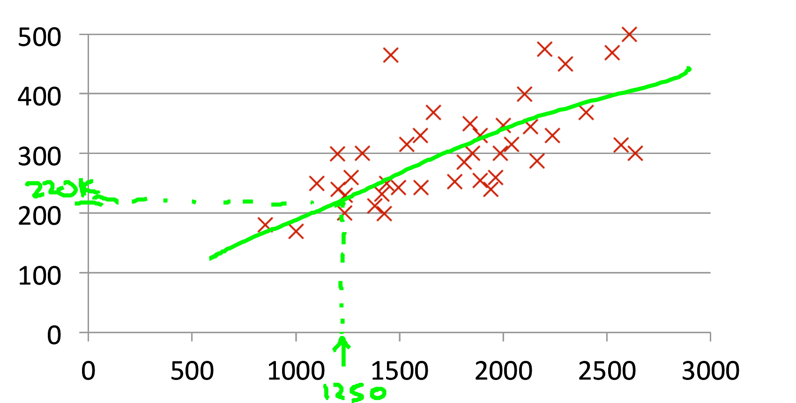
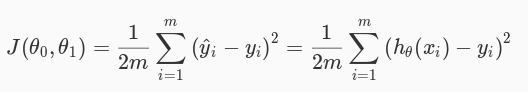
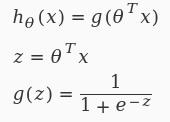
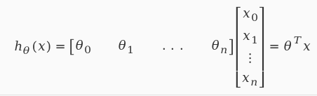
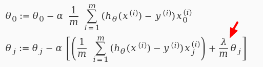

Content management in AI-driven world
bit.ly/ffwbg-ml
Drupal + Technology

About me
Valery "valthebald" Lourie
Drupal Developer, FFW Agency
valthebald
Field of study that gives computers the ability to learn without being explicitly programmedArthur Samuel
A computer program is said to learn from experience E with respect to some class of tasks T and performance measure P, if its performance at tasks in T, as measured by P, improves with experience E.Tom Mitchell
Learning flow

Linear regression
Hypothesis
h = θ0 + θ1 * X Linear regression
Hypothesis
h = θ0 + θ1 * XCost function
Gradient descent

Classification problem

More features!
Less features!
Bias vs variance

Validating the model
- Training set: 60%
- Cross validation set: 20%
- Test set: 20%
- Optimize the parameters in Θ using the training set for each polynomial degree.
- Find polynomial degree with least error using cross validation
- Estimate generalization error using test set
Working with large data set
Stochastic gradient descent
- Shuffle training set
- Perform gradient descent for single example
- Choose low α!
Working with large data set
Online learning
- Process training examples as they go
- Adjust parameters θ after every example
- Throw examples immediately
- Bonus: adjust to changing users preferences
The task: what's missing?
Variables
- Visitor demographics (country/language)
- Time (weekday/hour)
- Previous history of actions
- Current page data (taxonomy)
- Update date of the content
Split test and feedback
The task: what's missing?
Variables
- Visitor demographics (country/language)
- Time (weekday/hour)
- Previous history of actions
- Current page data (taxonomy)
- Update date of the content